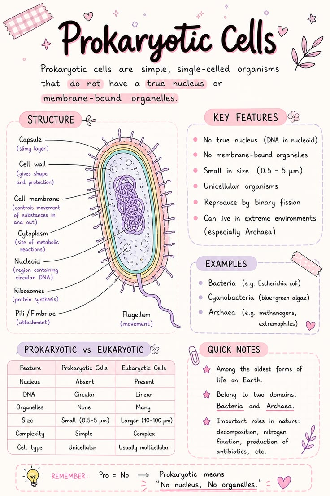
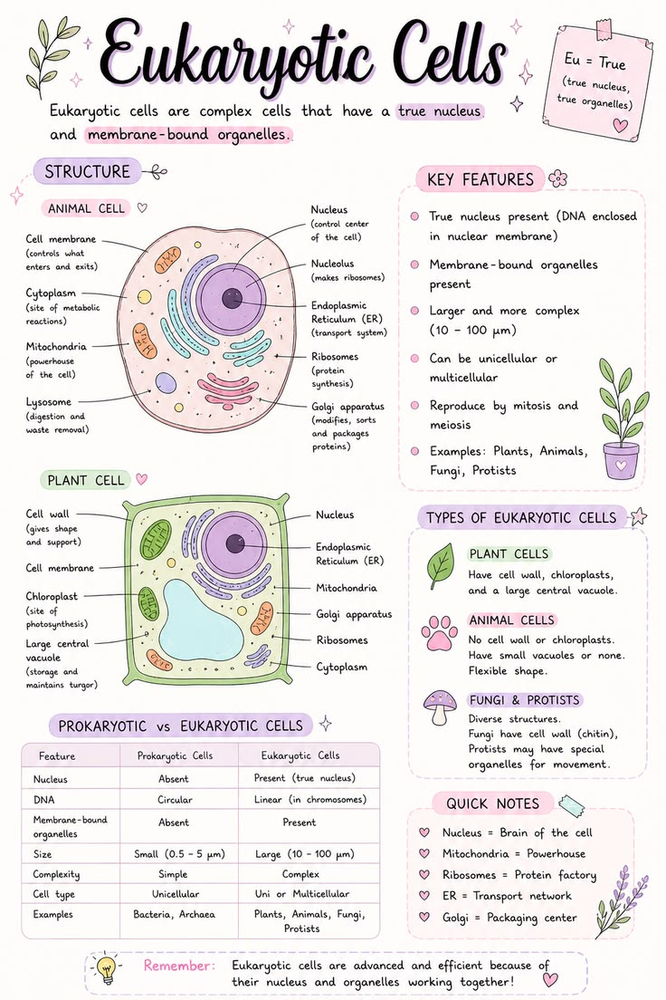

🦠 Prokaryotic vs Eukaryotic Cell
Understand the structural and functional differences between prokaryotic and eukaryotic cells.
🦠 Prokaryotic Cell

- ✅ No true nucleus
- ✅ DNA is free in the cytoplasm
- ✅ No membrane-bound organelles
- ✅ Smaller in size (1–10 μm)
- ✅ Mostly unicellular
- ✅ Simple internal structure
- ✅ Example: Bacteria
🧬 Eukaryotic Cell

- ✅ True nucleus present
- ✅ DNA enclosed in the nucleus
- ✅ Membrane-bound organelles present
- ✅ Larger in size (10–100 μm)
- ✅ Can be unicellular or multicellular
- ✅ Complex internal structure
- ✅ Examples: Plants, Animals, Fungi
Similarities
- Both contain DNA.
- Both have ribosomes.
- Both are surrounded by a plasma membrane.
- Both perform essential life processes.
- Both contain cytoplasm.
📌 Key Points
- Prokaryotic cells are simple cells without a true nucleus.
- Eukaryotic cells possess a well-defined nucleus enclosed by a nuclear membrane.
- Membrane-bound organelles are absent in prokaryotes but present in eukaryotes.
- Prokaryotic cells are generally smaller than eukaryotic cells.
- Bacteria are prokaryotes, whereas plants, animals and fungi are eukaryotes.
📝 Remember
Pro = Primitive (No True Nucleus)
Eu = True (True Nucleus Present)
🎯 JKBOSE Exam Point
The following questions are frequently asked in JKBOSE examinations:
- Differentiate between prokaryotic and eukaryotic cells.
- Write four characteristics of prokaryotic cells.
- State four differences between prokaryotic and eukaryotic cells.
- Give one example each of a prokaryotic cell and a eukaryotic cell.
- Why are bacteria called prokaryotes?
❓ Practice Questions
- What is a prokaryotic cell?
- What is a eukaryotic cell?
- Write five differences between prokaryotic and eukaryotic cells.
- Which cell type is more complex? Why?
- Name one organism belonging to each type.